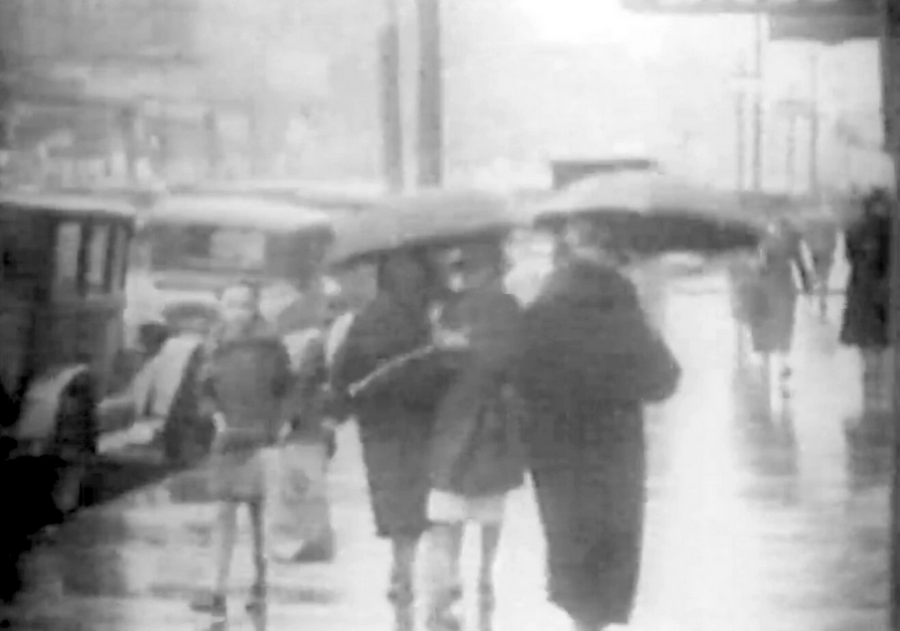

Performance | Halsted Street
Halsted Street is a new performance by Pablo Helguera created in conjunction with the MCA exhibition Collection in Conversation with Pablo Helguera. The performance takes its title from director Conrad Friberg’s 1934 silent film of the same name; the film uses a single camera to move in an unbroken drive down Chicago’s major north-south running artery, revealing stark social and racial disparities along its route. Helguera—who lived in Chicago throughout the 1990s and debuted his first major theatrical work on Halsted Street—bridges the museum’s collection with his own memories of coming of age as an immigrant walking the city’s streets. Weaving together themes of visibility, resilience, rebellion, and creativity under constraint, Halsted Street revisits the city as a site of labor struggle, migration, and artistic formation. Helguera is joined onstage by Tamar Brooks, Joseph Antonio, and Cameron Wise.
Edlis Neeson Theate